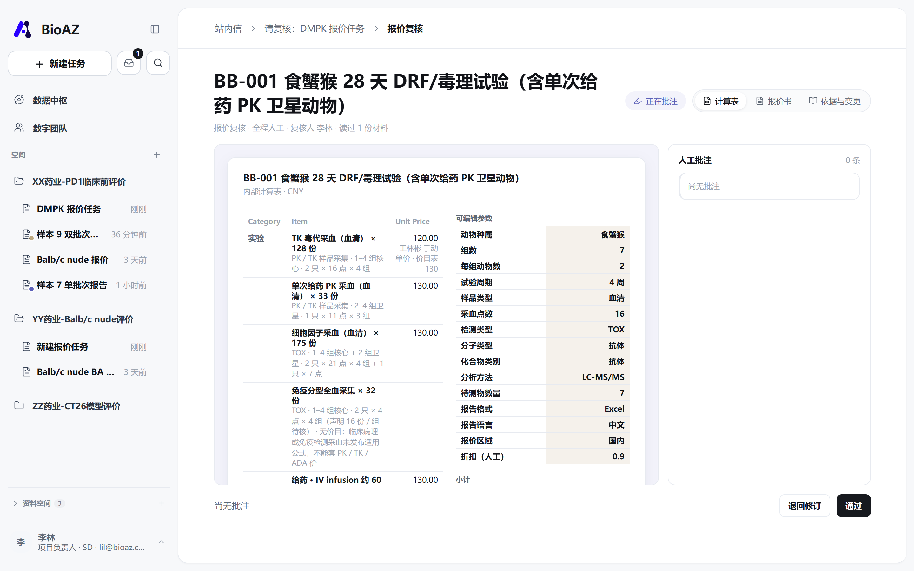

空间与入口页beta5 把项目改成了空间，每个空间先落到一个「我能为你做什么」的入口页——我们照做，但把这一页做成了这个空间的门。

一句问候 + 输入框 + 专家 chip，底下四个数字（文件 / 记忆 / 知识 / 产物）和专家头像。

空间插画 + 标签 + 四张专家卡（hover 出介绍）+ 配置专家 + 概览三卡。任务仍在第一句话发出时才建立。
一句话之后，右栏放什么会议定了：右栏不再收集参数，只做「已收集参数的状态展示 + 对应单价」。这是这次最大的分岔。

右栏是参数分组完成度（检测类型 / 动物实验 / 生物分析 / 报告与报价，13/13）——这是我们上一版的参数面板。对话里是一段文字把参数全倒出来。

右栏是报价板块：按 PK/TK · TOX · BA · ADA · 动物 · 报告分板块，行内只有「数量 × 单价」和待测物 · 方法。账不等参数齐：填一项亮一行，缺的写「去填」。
传一份方案，发生了什么多模态入口（Word / PDF / 截图 / 聊天记录）、解析轨迹、每项参数的原文依据、「识别」与「确认」两态。
beta5 的会话从「请向用户追问 11 项」开始，用户回一段 13 项参数的文字。

「已读取 BB-001 方案」：7 组 / 7 分析方法 / 37 采样事件 → 识别 11 项、2 项待确认，已计价 20 项 ¥222,860，7 项未计价（待确认 2 · 无价目 4 · 缺参数 1）各带原因。右栏每一项标「识别」，铅笔逐项确认，点来源看原文句子。
读出来的东西，按八维归位工程方案第一层定了「8 维提取 Schema」。原型把材料面板按它排，每一维落到参数模型的哪个格子、哪一行账，都对得上。
- ① 动物→ 动物种属
- ② 组别→ 组数 · 核心 / 卫星
- ③ 数目→ 每组动物数
- ④ 实验操作→ 板块里的行（给药 / 采血 / 剖检…）
- ⑤ 操作次数→ 采血点数 · 试验周期
- ⑥ 检测项目→ PK/TK · TOX · ADA 板块
- ⑦ 检测方法→ 分析方法
- ⑧ 检测数量→ 每行的份数
方案第三、四、五层的几条规则也补进了原型：每化合物少于 30 份按 30 计；猴类价 / 折扣 / 其他费用是人工输入项，不假装有价目；BA Only 不问动物参数，台账写「不适用」。

「输入材料」面板：按八维提取 · 读到 8 / 8 维，每一维带原文位置（§1 / 表 2 / 表 3），能展开看明细。没归到八维的（聊天记录里的交付要求）排在最后。
费用怎么看，价怎么改beta5 把费用明细作为一次性输出贴在对话里；我们把它做成右栏常驻的账，单价旁就是改价。

「费用明细」卡：6 行、总价、「计算详情」按钮，再下面 xlsx / docx 两个文件。改价没有路径——要改只能重新对话。

同一条路走了三种价：改价——TK 毒代采血 ¥130 → ¥120，行上挂「临时价 · 原价 · 恢复」；补价——猴类价系统没有，标「待补价」，人给 ¥30,000 只作用于本单；本单折扣 0.9——人工调整项，作用在合计上，写进纸面的黄格子。每一步对话里都留一句「仅本次报价，价目表不动」。
完整价目表不进对话独立入口给 SD；但「这单用了哪些价」可以在对话里问，回一张本单命中的表。

「列出本单命中的价目」→ 费用项目 / 板块 / 单价 / 本单用量 / 状态。同一档价折一行，临时价带原价，无价目另起。谁都能问，那不是完整表。

「查看完整价目表 →」进报价管理，页首一行：这里是全局，改本单回会话。SD 助理进来是只读。
人、站内信、工单、复核beta5 里没有「人」的概念；报价审批和退回在我们这里是一条完整的链。

待办与动态分开；工单带附件、时间线、处理人；交接从会话里一键发出。

审批人对着计算表 / 报价书逐行批注 → 退回修订 → 撰写人那边批注回到会话、改参数、重出 v2。
文件、产物、来源会话两边都有「产物」和它来自哪条会话；beta5 多「记忆」「知识」两档。

文件 / 记忆 / 知识 / 产物四档，按空间筛，有回收站和「问问文件助手」。

根级「全部文件 | 产物」分段，产物档多一列来源任务，点进那条会话。
权限，和「+」里的技能 / 连接器权限分级会上后置了；我们用账号切换器演出"同一单在 SD 和 SD 助理眼里各是什么样"。

技能 = 让数字同事现在就做（总结 / 列价目 / 核对 / 预览 / 生成，做不了的灰掉写原因）；连接器 = 本会话在读哪些源（项目文件库、计价规则库）。
| SD 助理 | SD | |
|---|---|---|
| 看板块 / 参数 / 价格 | ✓ | ✓ |
| 改临时价 / 补价 | ✓ | ✓ |
| 完整价目表 | 一行说明 | ✓ |
| 后台改底表 | 只读 | ✓ |
赵敏 = SD 助理，王林彬 / 李林 = SD。级别显示在左下角账号行。